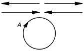

Беседа 3417 от 3877 · Беинса Дуно
Самообладание
Отче нашъ.
Изгрѣва слънцето.
Размишление.
Всички трѣбва да работите. Всички ще напишете по едно писмо на нѣкой вашъ приятель, едно кратко писмо. Нѣкой отъ васъ може да напише какъ е билъ въ класа, нѣкой може да напише на приятеля си, че е ходилъ на екскурзия, нѣкой може да напише, че е направилъ посещение нѣкому. Каквато и да е работа, едно хубаво писмо ще напишете на единъ вашъ приятель и ще се подпишете. Сега хората остаряватъ, когато започнатъ да мислятъ, че много знаятъ. Щомъ започнете да мислите, че много знаете, вие сте въ старостьта. Че много знае човѣкъ, то е като туришъ единъ товаръ и започвашъ да усѣщашъ, че е тежъкъ. Колкото повече усѣщашъ тежестьта, толкозъ тежестьта е по-голѣма. Голѣмата тежесть състарява човѣка. По възможность човѣкъ трѣбва да носи малка тежесть. Въ ума си не трѣбва да носите тежесть. Всѣка мисъль, всѣко чувство да бѫде леко, да не тежи. Казва: „Тежи ми нѣщо на сърдцето“. Извади тежестьта отъ сърдцето. Казва: „Тежи ми на ума“. Извади този товаръ отъ ума си. „И на тѣлото тежи нѣщо“.
После мнозина отъ васъ трѣбва да се научите да пишете. Щомъ дойде до истината, тази част (на) стрелката показва, че трѣбва да каже истината. Знаете ли, (че) за да кажешъ истината, какъвъ умъ трѣбва да имашъ? Ти виждашъ нѣщо и да го нарисувашъ естествено. Човѣкъ, който вижда лошото въ хората, той не знае какво нѣщо е истина. Истината седи да видишъ въ най-голѣмото лошо да видишъ хубавото. Това е истина: и въ най-лошото да видишъ хубавото, доброто. Да виждашъ най-лошото въ доброто – това не е истина. Казва: „Азъ виждамъ истината“. Истината е да видишъ доброто и въ най-голѣмото лошо. Мислите ли, че една тигрица, която дави нѣкое животно, отъ омраза го дави? Хванала животното и го дави отъ любовь, заради любовьта си къмъ децата си го дави. Ако нѣма любовь къмъ децата си, ни най-малко нѣма да хване да го дави. Неразбраната любовь ражда онази, кривата ревность. Нѣкой пѫть вие ревнувате, оплаквате се, че хората не ви обичатъ. Туй не зависи отъ васъ. То отъ хиляди години сѫществува. Чувството на ревность сѫществува, не сте го изобретили вие. То сѫществува и между най-възвишенитѣ сѫщества. Само че тѣхната ревность е малко отъ другъ характеръ, а вашата е отъ другъ. Запримѣръ, ако ви кажа, че рисувамъ. По нѣкой пѫть нарисувамъ такъвъ единъ образъ. /Въ оригинала липсва рисунката/. Туй е неразбиране. Това изкуство ли е? Не е. То сѫ детински нѣща. Вие се възхищавате, но заради мене има съдържание. Тия уста, този вдлъбнатия носъ, тия линии, отъ тѣхъ вече имаме една представа за характера на човѣка какъвъ е. Вижъ носа, за да видишъ какъвъ е. Вижъ ухото, за да видишъ какъ се проявява. Вижъ устата, за да видишъ какъвъ е и какъ се проявява въ дадения случай. Запримѣръ: На нѣкой отъ васъ устата показватъ стѣснение, устата показватъ, че се намирате въ стѣснени условия. Като гледамъ устата на нѣкой, виждамъ, че сърдцето не е свободно. Като гледамъ носа на нѣкой, виждамъ, че умътъ не е свободенъ. Като гледамъ ухото на нѣкой, виждамъ, че тѣлото не е свободно. Нѣкой пѫть ухото е близо до главата, нѣкой пѫть е отдалечено.
Казвамъ: Когато се изучава човѣкъ, трѣбва да бѫдете много благороденъ, за да не би по външнитѣ признаци, които има, да си съставите едно понятие, да кажете: „Той е лошъ човѣкъ“. Подъ думата „лошъ човѣкъ“ ние разбираме човѣкъ, който е въ дисхармония съ насъ. Общото понятие е това. Нѣкой човѣкъ по мисъль, по чувство, по постѫпка не хармонира. Казваме: „Лошъ човѣкъ, той нѣма обхода“. Сега ние трѣбва да имаме една обхода. Трѣбва да имаме една мѣрка. Тази мѣрка откѫде ще я вземемъ?
Както сте насѣдали, едни държите рѫцетѣ прекръстосани, други ги държите надолу, други – отдалечени, нѣкой турилъ крака отгоре. Всичко туй, защо е? Ако речешъ да измѣнишъ единъ старъ навикъ, знаешъ колко мѫчно е. Искашъ пакъ старото. Да кажемъ, (че) имашъ нѣкой пѫть слабость, сърби те нѣкѫде и казвашъ: „Нѣма да се чешамъ“. Като те засърби, неволно се почешешъ. Не се чешай. Мислишъ, че като се почешешъ, ще ти мине. Нѣма да ти мине. Като се почешешъ веднажъ-дважъ, три пѫти, тия нѣща оставатъ въ вашия характеръ. Сърби те, казвашъ: „Нѣма да се чеша“. Упорствувашъ, искашъ да имашъ характеръ. Нека те сърби, да търпишъ нѣщо. Заболи те нѣщо, не можешъ да търпишъ. Ще кажешъ: „Не ме боли“. Речи си: „Онзи, когото боли, той е другъ. Мене не ме боли. Ти искашъ да ме убедишъ, че мене ме боли“. Най-после те убеди, че те боли крака, ти повѣрвашъ и те заболи крака, нищо повече. Вие ще кажете: „Това е философия“. Следете вашата вѣра. Заболи ви крака, много проста работа е – станало е свиване на капилярнитѣ сѫдове, преминало повече електричество въ тази область, свили се капилярнитѣ сѫдове (и) става напоръ. Кръвьта, която минава, не може свободно да мине. Въ кръвьта се намиратъ твърди частици, които, като минаватъ, образуватъ триене. Образува се известно възпаление, вие чувствувате болка. Ако държите вашата мисъль въ естествено положение, ще изпратите доста топлина на крака. Като ви заболи крака, изпратете топлина на крака, единъ топълъ компресъ. Като ви заболи нѣщо нѣкѫде, не ходете да разправяте за болестьта. Вие ходите и разправяте какво ви боли, казвате: „Боли ме хълбокътъ“. Твоятъ хълбокъ оздравява. На онзи, на когото разправяте, него го заболи хълбока. Предавате си болестьта. Най-първо следете въ себе си. Има състояния въ васъ, които трѣбва да ги наблюдавате. Минава единъ човѣкъ, плюе или се изсекне, ти го видишъ, намръщишъ се. Ти не си господарь на носа. Виждашъ го, ти извади поука. Този човѣкъ дошълъ, иска да направи добро, казва: „Пари нѣмамъ, но каквото имамъ въ носа – давамъ го“. Понеже то е богатство, което седи въ носа, каква мекота въ носа. Казва: „Отъ ценното, което имамъ въ носа – давамъ“. Така азъ го тълкувамъ. То не е тъй. Той нѣма поведение, не знае какъ да се обхожда. Така е, че не знае да се обхожда – не знае. Но трѣбва да дадемъ едно хубаво тълкувание. Тогава какво ще направишъ? Той като замине, ще идешъ да заровишъ това съкровище. Той се изсекне тамъ, ти чакай като си замине – вземи една клечица, отвори една дупка, закрий го, тури му знакъ кѫде заравяшъ това съкровище. Бихъ желалъ тукъ, на Изгрѣва, който плюе нѣкѫде – да се зарови тази плюнка, тя е ценна. Писанието казва: „Ще залича грѣховетѣ ви“. Господь, като мине, вижда много нѣща, всичко заличава и казва: „Нѣма да помена вече пристѫпленията ви“.
Та казвамъ: Трѣбва ви единъ новъ начинъ за постѫпка. Всѣки день, като се срещате, трѣбва да откривате нѣщо ново въ другия. Вие не се стремите да откривате хубавитѣ работи въ себе си, но търсите дребнитѣ на баба ви, дѣдо ви. Редъ поколѣния сѫ оставили старини. Намѣри нѣкаква старина, защо го държи? Държи го човѣкътъ за споменъ на дѣдо си. Има единъ навикъ – дѣдо му обичалъ да плюе, и той плюе. Дѣдо му обичалъ да пие винце – и той пие. Дѣдо му обичалъ да пуши цигари – и той пуши. Дѣдо му обичалъ да носи биръ-бучуклия гащи – и той носи като него. Докато се научатъ българитѣ да носятъ панталони, доста възражения правѣха, казваха: „Какво сѫ турили тия кюнци, нахлузени на краката? Безобразие. Такива гащи, носятъ ли се? Биръ-бучуклия разбирамъ“. Сега модернитѣ (панталони) сѫ широки. Турскитѣ сѫ прилепнати. То има психологическо разбиране. Ако река да ви обяснявамъ, то е губене на време. Следъ като ви обясня, каква полза ще имате вие? Вие имате една добродетель, но има нѣщо, което стѣга добродетельта. Защо стѣгате добродетельта? Често забелязвамъ нѣкои деца. Нѣкои деца има, или нѣкоя жена, като погледнешъ краката – събере краката. Турцитѣ скриваха рѫцетѣ, гушата, да не ги видятъ, да не съблазнятъ. Пъкъ въ новата култура всичко туй се отваря – да се виждатъ рѫцетѣ, врата. Казватъ: „Господь го създалъ хубаво“. Отваря рѫката, да бѫде както Господь я създалъ да е хубава рѫката, и вратътъ да е хубавъ. Като видишъ – да излиза свѣтлина и топлина. Като пипнешъ тази рѫка – студена, защо ти е? Тя е мраморъ. Да е топла, да видишъ, че има движение. Рѫката предава нѣщо магнетично. По нѣкой пѫть азъ бихъ ви препорѫчалъ, като останете сами въ стаята, гледамъ тукъ – голтаци ходите, но то е безобразие. Ти ще се съблѣчешъ голъ въ стаята си и ако се харесашъ, тогава ще излѣзешъ така. Като се гледашъ, нищо да не те съблазнява. Като погледнешъ походката, ако има нѣщо да те съблазнява, не ходи да поставяшъ своята съблазънь вънъ, да ходишъ голъ. Гледамъ единъ, тръгналъ голъ и турилъ едни гащи. Ако искате голи да ходите, ще си направите едни гащи, хубави гащи, да прилѣгатъ по тѣлото. Като ходишъ отвънъ, не ходете съ обикновенитѣ си бѣли гащи. Направете си да прилѣгатъ или бѣли, или червени, или сини, (но) като ги туришъ – да прилѣгатъ. Отъ трико може да си направите. Тогава съ тѣхъ може да излѣзете. Единъ моралъ да има. Онова, което изявяваме, да има нѣщо хубаво, да го изнесемъ. Ако рѫката е хубава, изнеси тази рѫка. Най-първо работи да е хубава, не е лошо. Казвамъ: Не трѣбва да даваме съблазънь единъ на другъ, да се критикуваме. Отъ всѣко нѣщо ти да си доволенъ и другитѣ да сѫ доволни.

Казвамъ: Най-първо ще се научите да се самовладате. Седи нѣкой човѣкъ, напада ви. Вие нѣмате въздържание, не сте търпеливъ. Кой е търпеливъ? Търпеливъ може да бѫде силниятъ човѣкъ. Слабиятъ човѣкъ не може да бѫде търпеливъ. Богъ е търпеливъ да задържи силата си. Едно дете, което не може да задържи единъ конь, то не е търпеливо. Онзи всадникъ, който се качилъ на коня (и) държи коня – той е търпеливъ. Ако вие не можете да задържате себе си, да задържите вашиятъ умъ, веднага избухвате – силата ви е малка. Ако въ вашитѣ чувства вие не можете да задържите – силата ви е малка. Ако въ тѣлото, като вървите, вие не владате органитѣ си – слаби сте. Казвамъ: Най-първо трѣбва да станемъ силни. Силни органически, силни по сърдце и силни по умъ. Тази сила нѣма да дойде по наследство. Върху туй трѣбва да се работи дълго време. Нѣкой пѫть седишъ и вѫтре се дразнишъ. Свири нѣкой на пианото, дразни те. Говори нѣкой, виждашъ работитѣ не сѫ свързани, не сѫ логични. Религиознитѣ говорятъ нѣкои работи, заблуждения иматъ. Представятъ за онзи свѣтъ туй, което не е. Менъ, дето сѫ ми разправѣли за онзи свѣтъ какво сѫ виждали. Тия нѣща сѫ вѣрни, но туй не е онзи свѣтъ. То сѫ редъ картини, филми. Ходилъ нѣкой на нѣкой филмъ, вижда войната, но то е филмъ, то не е войната. Тя е една малка картина, взета отъ нѣкой сюжетъ отъ бойното поле.
Трѣбва да се влѣзе сега въ Божествения свѣтъ, дето сѫ разумнитѣ сѫщества. Само тогава човѣкъ може да се облагороди. Стремете се по мисъль, по чувство да се свържете съ напредналитѣ сѫщества. Земята е пълна съ тѣхъ. Вие не може да ги намѣрите. Казвате: „Кѫде да ги намѣримъ тия сѫщества?“ Всичкитѣ ония сѫщества на земята какъ намиратъ слънцето? Я вижте онзи щурецъ, направилъ дупка и я турилъ оттамъ, отдето ще изгрѣе слънцето. Като изгрѣе слънцето, да може да хваща лѫчитѣ на това слънце. Казвамъ: Всичкитѣ ония добри хора въ свѣта, тѣ мязатъ на запалени факли. Вечерно време като пѫтувате, като се приближите къмъ тѣхъ, тѣ ще ви ориентиратъ въ пѫтя, по който вървите. Сега вие имате за себе известни понятия. То е вѣрно. Кое показва настоящото състояние? Ако десеть години вие се учите, по какво се отличавате? Вие влизате като едно малко невинно дете, но не знаете да пѣете. Вие сте добъръ, но умътъ ви не е развитъ, пѣние нѣмате. Следъ десеть години вие се научавате да пѣете хубаво, да свирите хубаво, имате придаденъ единъ плюсъ. Десеть години като се занимавате съ математика, имате единъ плюсъ. Десеть години се занимавате съ инженерство, имате понятие какъ се строи. Десеть години сте изучавали земедѣлие, имате единъ плюсъ приложенъ въ живота. Десеть години сте изучавали психология, душитѣ на хората. Нѣкой казва: „Изучавамъ психология“. Много мѫчно е да се изучава психология, понеже нѣмате нищо видимо въ дадения случай. Имашъ само чувство (при) този човѣкъ като го видишъ. Казвашъ: „Хареса ми“. То е една илюзия. Азъ може да скрия подъ благовидниятъ си изразъ единъ свой недостатъкъ. Трениране е това. Да видите дипломатитѣ. Религиознитѣ хора, понеже искатъ да бѫдатъ прѣми, тѣ винаги взематъ сериозна поза. Никаква религиозность не е това. Сериозностьта разбира, че ти имашъ нѣкоя важна мисъль, която те занимава, или нѣкое чувство, което те занимава. Тамъ сериозность има. Детето, като види една череша, цени колко струва. Колкото черешата е по-хубава, неговото внимание е по-съсрѣдоточено. Колкото черешата е по-недоразвита, вниманието е по-малко. Психологически може да разглеждашъ какъвъ отенъкъ иматъ очитѣ. Като види плода, има една усмивка. Нѣкой ще погледне, седи спокоенъ. Щомъ не обича череши, казва: „Не ме интересуватъ черешитѣ“.
Всички търсите щастие въ живота, пѫтя, по който трѣбва да дойде новиятъ животъ. Новиятъ животъ ще дойде по пѫтя на сърдцето. Не може да дойде правиленъ животъ, ако пѫтьтъ на сърдцето не е отворенъ. Сърдцето е цѣлъ свѣтъ. Трѣбва тия пѫтища на сърдцето, всички да сѫ добре построени (така), че ходоветѣ по които животътъ ще дойде, да може да тече правилно. Ти седишъ, безпокоишъ се, пари нѣмашъ. Нѣкой казва: „При сегашнитѣ условия паметь нѣма. Не може да мисли“. Добре, паметь нѣмашъ, понеже мислишъ за много работи. Разсѣйва се човѣкъ. Азъ съмъ превождалъ онзи примѣръ, дето единъ американски професоръ отива на пощата и си забравилъ името. То сѫ изключения. Чиновникътъ (му) казва: „Моля, кажете си името“. (Професорътъ) казва: „Извинете“ (и) отива да пита жена си за името. Срѣща го на пѫтя единъ неговъ приятель и му казва името. Той отива пакъ на пощата и си казва името. Отъ какво зависи това? Туй зависи отъ голѣмото неспокойствие. Набрала се млѣчна киселина въ мозъка. Може сега да ви обяснявамъ, но тия обяснения нѣма да ви ползуватъ. Когато се намали млѣчната киселина въ човѣшкия мозъкъ, пирамидалнитѣ клетки, отъ които зависи човѣшката мисъль, не могатъ да функциониратъ. Ако разгледате повърхностьта на мозъка, тѣзи, живитѣ клетки, иматъ крачка, че когато човѣкъ започва да мисли – съединяватъ крачката и теченията ставатъ правилно. Като се съединятъ клеткитѣ, токоветѣ минаватъ правилно. Когато се намѣри млѣчната киселина, клеткитѣ свиватъ крачката си и мисъльта е разкѫсана. Дойде нѣкѫде, не сѫ съединени крачката на тия клетки, мисъльта върви трудно. Историческата паметь е насрѣдъ челото. Ти искашъ да си спомнишъ, (но) не иде, не иде. Или музикалната паметь, която е на срѣдата на челото, но въ страни, или паметьта за цвѣта въ долната часть на челото. На разнитѣ мѣста на челото специфична паметь има. Казвамъ: Въ новото учение ти трѣбва да знаешъ какъ да възпитавашъ мозъка си, какъ да възпитавашъ сърдцето си. Намѣри нѣкоя добра черта въ нѣкой човѣкъ за самия тебе. Че той може да е човѣченъ, но въ дадения случай този човѣкъ не се обхожда добре съ тебе, но той се обхожда много добре съ другитѣ. Намѣри страна защо той се обхожда съ другитѣ добре, а съ тебе не. Не туряй, че ти си на правата линия, той на кривата. Тури, че и той е на правата, ти не си на правата. Понеже въ себе си лошото по-лесно може да го поправишъ, отколкото въ другитѣ. Азъ лошото въ мене може моментално да го поправя, но лошото въ другитѣ не мога така лесно да го поправя. Ако взема неговата погрѣшка, лесно мога да я поправя. Да допуснемъ, че нѣкой пѫтникъ пѫтува отнѣкѫде, но има високоразвито чувство на самоуважение. Три дена той не е ялъ и иде при васъ. Вие имате хлѣбъ, но не искате да му дадете. Окото ви го не хваща. Казвате: „На такъвъ човѣкъ хлѣбъ не искамъ да давамъ“. Какво ще стане съ такъвъ човѣкъ? – Ще ви намрази. Като го срещнешъ и (ще) кажешъ: „Много ми е приятно, че ви срѣщамъ“, нахранишъ го, посрещнешъ го. Като дадешъ на този човѣкъ, не дадешъ като на нѣкой слуга, но да му дадешъ всичкото уважение тъй, както на себе си. И въ чувствата си (да) имате сѫщото уважение и почитание къмъ него.
Казвамъ: Въ такива класове, както сте тукъ събрани, вие изгубвате самоуважението. Нѣкои отъ васъ не се самоуважавате достатъчно, нѣкои отъ васъ сѫ по-развити, знаятъ повече. Тукъ се обезличавате. Казвате: „Какво знае, той свършилъ по химия, не ме интересува“. Нѣкой е музикантъ, кажете: „Не ме интересува“. Кое ви интересува? Останали сте (такива, че) само като усѣтите, че нѣкой има пари – вече ви интересува. Че по химия знае, че музика знае – не ви интересува. Като има пари и каже, че може да ви услужи – вие сте вече много любезенъ. Но то е лицемѣрие това. Той си има пари, нека да си има, нека да си обича паритѣ, защото паритѣ сѫ една развалена жена. Тя се усмихва на всичкитѣ. Въ който и джобъ да е – не протестира, всички обича. И съ разбойника, и съ развратника, и съ светията. Казва: „Все едно“, безразлично е, ни най-малко не се оплаква. Азъ виждамъ известна страна на паритѣ. Казвамъ: Бихъ желалъ да имамъ характера на паритѣ, че въ който и джобъ да съмъ – да ми е се едно, да ме не интересуватъ хората кой какъвъ е. Азъ искамъ въ джоба да бѫда, нищо повече. Какво има да се безпокоите, че нѣкой човѣкъ е лошъ. Господь не се безпокои, вие се безпокоите. На Господа този, лошиятъ човѣкъ е единъ цвѣтъ, само единъ видъ екземпляръ е. Нѣма двама хора еднакви. Този, лошиятъ човѣкъ, е единъ екземпляръ, единъ специфиченъ цвѣтъ, бодилъ. Държатъ го, за да го показватъ нѣкѫде. Вие не сте недоволни отъ него. Дойде ви една мисъль въ васъ, дойде ви една лоша мисъль, вие не можете да се освободите.
Първото нѣщо – старайте се вечерно време, преди да си легнете, да почистите съзнанието си. Богъ не обича да държимъ нечисти работи въ ума, въ сърдцето. Очисти съзнанието отъ набранитѣ неестествени нѣща въ сърдцето. Освободи се отъ тѣхъ. Не можете съвършено да се освободите. Поне на половина да се освободите. Вие ще кажете: „Нѣмамъ време“. Но една лоша мисъль, едно лошо желание ще ви вземе много повече време. Ако не намѣрите време да се освободите отъ него, после ще ви вземе повече време. Сега тия работи сѫ необходими. Това психологически е необходимо за тѣлото ви, защото тѣлото, за да се обновява, не трѣбва да се претоварва. Чрезъ сърдцето, чрезъ ума си ние разваляме тѣлото, понеже чрезъ нашитѣ мисли, чрезъ нашитѣ чувства ние покваряваме кръвьта. Тази кръвь е носителка на всичкитѣ болести. Тогава лошитѣ мисли започватъ да се наслояватъ долу въ пръститѣ, въ колѣната, въ ставитѣ, въ гръбначния стълбъ, въ храносмилането, въ дихателнитѣ органи, най-после въ кръвьта се отлага и въ мозъка започва да чувствувашъ неразположение, тъмно ти е, мѫчно ти е.
Казвамъ сега: Научете се да бѫдете философи. Двама души се каратъ, не питайте защо се каратъ, седете и ги гледайте. Кажете: „Колко хубаво си говорятъ, колко откровено, никаква лъжа нѣма“. Единиятъ казва: „Ти си такъвъ, ти си онакъвъ“. Казва: „Ти не си щедъръ. Говори истината“. Казва: „Не знаешъ“. Не зная, разбира се. Какво зная? На слънцето не съмъ ходилъ, на месечината не съмъ ходилъ, по звездитѣ, всичката земя не съмъ заобиколилъ, на дъното на океана не съмъ билъ. Казва: „Нищо не знаешъ“. Правъ е човѣкътъ. Казва: „Отъ градежъ нищо не разбирашъ“. – „Разбирамъ малко“. Какво разбирамъ отъ градежъ? – „Отъ рисуване не разбирашъ“. – „Разбирамъ, но не мога да рисувамъ“. Отъ литература не разбирамъ, но всички велики автори зная. Казва: „Ти не си религиозенъ“. На много религиозни хора съмъ казвалъ: Я ми кажи, съ коя дума Мойсей започна най-първо? Казва: „Въ начало“. То е на български, но кажи ми Мойсей какъ каза? Не знаешъ ли? По мойсеевски ще ми кажешъ. Нѣкой англичанинъ ще ми цитира. Въ началото, „In the begining“. Кажи ми, какъ каза Мойсей? Кажи ми, какъ Христосъ каза? На кой езикъ говори Христосъ? Христосъ не говори на български. Вие цитирате Христа. Цитирай, както Христосъ е казалъ. Какъ ще Го цитирашъ? Какъ е казалъ Господь? Цитирайте, както Господь е казалъ. Ако азъ дойда при васъ на първия езикъ – нѣма да ви говоря нищо, но ви нося една кошница съ най-хубави череши, ще ви се поклоня и ще ви дамъ кошницата. То е Божественъ езикъ. Ще се помѫча и на български да ви преведа съдържанието. Това дърво азъ не съмъ го садилъ, менъ ми го даде дѣдо ми, донесълъ го отъ странство. То роди първитѣ череши, понеже искахъ да ви покажа какво нѣщо е Божествениятъ животъ. Донесохъ ви отъ тѣзи плодове, искамъ да опитате, да ми дадете вашето мнение за черешитѣ. Туй, което той (е) почуствувалъ отъ черешитѣ, то е Божествено и туй, което азъ съмъ почувствувалъ вѫтре – то е Божествено.
Вземете „ДОБРО“ на български и на английски. Въ английски думата има други трептения. На английски има две условия, значи доброто има два зародиша . Азъ така го тълкувамъ на английски. Едното е на сърдцето, другото е на ума. Човѣкъ, за да бѫде добъръ трѣбва да има единъ отличенъ умъ и едно отлично сърдце, здрава воля и здраво тѣло. Англичанинътъ е практиченъ. Българинътъ казва: „ДОБРО“. Добро е туй, което е излѣзло отъ Бога и което дава плодъ. Следъ (туй) казва: „Туй добро, което е излѣзло отъ Бога и което дава плодъ, трѣбва да му се дадатъ условия, да го използуваме хубаво“. Българинътъ казва: „Доброто, което вземешъ, трѣбва да даде нѣщо“. Българинътъ казва още: „Р-то, това показва, че като вземешъ доброто, да го не дадешъ само на единъ, но на всички“. Българинътъ е много практиченъ. Казва: „За всички трѣбва да оставишъ по малко“. Въ българитѣ майката за всичкитѣ ще остави по една лѫжица медъ. Въ птицитѣ не е така. Птицата, като носи благото, едното дете, като покаже устата, казва: „Мамо, колко те обичамъ“. (Тя) даде нему, пъкъ другитѣ църкатъ. Тя казва: „Нѣма за васъ“. После пакъ, и което пакъ си покаже устата, ѝ каже: „Мамо, колко те обичамъ“, тя на него даде. Децата на птицитѣ въ това отношение много се сърдятъ. Понеже бащата и майката иматъ пристрастие. Бащата обича нѣкои отъ малкитѣ повече и майката обича нѣкои отъ децата повече, като дойде да носи храна – азъ съмъ наблюдавалъ – въ гнѣздото има 4–5, показали си устата. Като ги погледне, дойде до едното, тури въ устата му. Другитѣ, горкитѣ, гледатъ. Казва: „Тукъ ще се учите на възпитание“. Не знаешъ тайната защо е. Има нѣщо между туй малкото сѫщество и между бащата, има по-голѣма привлѣкателна сила. Туй малкото сѫщество има по-голѣма привлѣкателность. Дойде майката, тя не дава на онова, на което бащата е далъ. Тя ще тури въ устата на онова, което нея привлича.
Казвамъ: Не може въ васъ доброто да дойде, ако нѣма нѣкаква привлѣкателна сила. Ако вие нѣмате стремежъ къмъ Бога, Той нѣма да се привлѣче къмъ васъ. Значи, що е стремежъ? Душата ви трѣбва да бѫде отворена. Туй го забелязватъ учителитѣ. Нѣкой пѫть учители има, като дойде нѣкой ученикъ, може беденъ да е, но като го погледне, ученикътъ е отворенъ. Каквото казва учительтъ, той поглъща. Приятно му е, че той го разбира. Него ще изкара на дъската – смѣта хубаво, говори хубаво, пише хубаво. Пъкъ другитѣ и тѣ внимаватъ, но този импулсъ нѣматъ вѫтре. Човѣкъ трѣбва да развива този Божественъ импулсъ.
Та казвамъ: Сега ще напишете това писмо. Ще бѫдете свободни, всѣки ще напише писмото тъй, както иска на него да му напишатъ. Нѣма да бѫде много дълго, ни една чертичка повече. Отъ 30 реда, нито редъ повече. Може да е 10, 20, 30 реда най-много. Десеть реда най-малко, не петь реда. Ако иска нѣкой десеть реда, ако иска 20, ако (иска) 30. Отъ едно до три, въ тия рамки. Азъ ви давамъ едно благородно число. Едното е Божествено. Дветѣ е да знаете какъ да се примирявате. 30-тѣ е какъ да постѫпвате. Първо – да знаешъ какъвъ е идеалътъ. Второто е да знаешъ противоречията въ живота какъ да ги примирявашъ. И три – да знаешъ какъ да се обхождашъ. Въ 10-тѣ ще впрѣгнешъ духа си, въ 20-тѣ ще се прояви вашата душа. Майката гледа да примири роденитѣ деца. Тя вижда, че едното не е така даровито, тя не може да обясни на децата защо на едното (е) дала повече, а на другото не дала. Детето казва: „Онзи, голѣмиятъ братъ, колко е здравъ, а пъкъ мене си родила хилавъ“. Какво ще каже майката? Условията сѫ повлияли на нея, тя не е била господарь на условията и следствие на това туй дете станало хилаво. Когато майката била господарь на своя умъ, на своето сърдце, тя предала най-хубавото нѣщо. Ако ние не сме господари на ума си въ даденъ моментъ, не може да предадемъ на другитѣ хора. Ако не си господарь, не може да възприемешъ добре нѣщата. Две злини има: ако нѣмаме самообладание на ума и на сърдцето си – не може да предадемъ онова, което трѣбва да възприемемъ въ свѣта, както трѣбва. Ние страдаме отъ две нѣща: не може да предадемъ онова, което трѣбва да предадемъ и не може да възприемемъ онова, което трѣбва да възприемемъ. Тогава се заражда едно противоречие.
После вие мислите, че Господь не ви обича. То е заблуждение на хората. Всѣки, който мисли, че Господь не го обича, тази идея е човѣшка. Една човѣшка идея вѫтре въ васъ ви пошепва. То е човѣшко пошепване на вашето радио. Богъ ви създалъ, Той иска туй, което вложилъ въ васъ, да се развие. Ако се грижи за едно семе, далъ му условия, праща слънцето. Колко повече изпраща заради васъ. Вие седите и казвате: „Какво съмъ азъ?“ Слънцето изгрѣва заради тебе, вѣтърътъ вѣе заради тебе, звездитѣ свѣтятъ заради тебе, всичкитѣ хора се движатъ заради тебе. Ще кажете: „Какво си мислишъ?“ За тебе, за онова Божественото, което Богъ е вложилъ въ тебе. Той иска да го обработвате. Като дойде Господь въ дома ти, на черешата да има череши, на сливата да има сливи, домътъ да бѫде чистъ. Не да дойде и да намѣри всичко нечисто въ кѫщи. Ако дойде и намѣри нѣкой да е ялъ пастърма, ако и дойде и намѣри у нѣкой повече пари, отколкото трѣбва. Колко пари ти трѣбватъ на день? Като дойде Господь, да не те намѣри богатъ съ пари, защото ще мине и ще си замине. Като те намѣри беденъ и риза нѣмашъ на гърба, ще ти даде хубава небесна риза, ще ти отвори кредитъ въ Божественитѣ банки.
Азъ ще ви приведа единъ примѣръ. Иде една сестра, доста нервна. Тя не е тукъ. Тя е друга сестра отвънъ. Тази сестра, за която говоря, е отвънъ. Казва: „Боли ме коремъ“. Казвамъ: „Ти си се влюбила, пъкъ на твоя възлюбленъ не му е времето да се жени. Ти искашъ преждевременно да се ожени, затова те боли коремъ“. – „Азъ никого нѣмамъ. Нѣмамъ сили въ тѣлото си“. Искашъ сега да ме лъжешъ. Нѣмашъ сила, но ако взема едно дърво, не можешъ ли да ходишъ? Тогава ще ви приведа другъ единъ примѣръ. Разправяше единъ свещеникъ въ време на войната въ 14-та година. Казва: „Не мога да ходя. Като ходя една крачка, клѣкамъ. Казвамъ си: едно време какъвъ бѣхъ, пъкъ сега какъвъ съмъ. Седѣлъ въ Варна предъ черквата, че като падна една голѣма бомба отъ тѣзи морскитѣ дреднаути, като гръмна, като се пукна, че по едно време не зная какво е било, но се намѣрихъ два километра вънъ отъ града, въ новата махала. Излизамъ на шосето накрая и не само това, но гледамъ – нося една тиква. Чудя се на себе си, чудя се на ума си отъ кѫде съмъ взелъ тази тиква. Да съмъ взелъ хлѣбъ, но тиква нося. Казвамъ си: Слушай, ти на 10 крачки не можеше да ходишъ, освенъ, че два километра си изминалъ, но и тиквата носишъ“. Ти се самоизлъгвашъ. Казвамъ на тази сестра: Има нѣкой тебе да те обича, но ти не го обичашъ. Обичашъ да лъжешъ, бѣла лъжа. Показвашъ се, като го видишъ, пакъ обръщашъ гърба. Като го срещнешъ сега, ще го погледнешъ хубаво, ще ти мине коремътъ. (Тя) казва: „Отболѣ ме коремътъ“. Когато говоримъ за любовьта, погледне ме, Господа виждамъ. Нѣкой човѣкъ ме погледне хубаво. Трѣбва да различавамъ. Всѣкога въ хората има Божествено. Богъ ме погледналъ, то е Божественото. Тогава застана съ всичкото уважение. Погледне ме, не е Господь, нѣкой пѫть хората ме гледатъ. Нѣкой пѫть Богъ те гледа чрезъ очитѣ на хората. То е моментъ. И въ този моментъ седя съ всичкото уважение. Бѫдете благодарни, че ви погледналъ. Като те погледне, тогава ти си веселъ, радостенъ, Господь те е погледналъ. То не се дължи на хората. Когато се усѣщашъ радостенъ и веселъ, то е Божествениятъ погледъ. Когато идатъ хубавитѣ мисли, хубавитѣ чувства – то е Божественото. Когато дойде здравето – то е Божествениятъ погледъ вѫтре въ насъ. Когато дойдатъ ония противоречиви нѣща – то е човѣшкото. Та когато идватъ Божественитѣ погледи, трѣбва да се радваме. Богъ е въ сила да преобрази всичко въ насъ. Казвамъ: Радвайте се на онзи погледъ, който Богъ предава на нѣкоя звезда да може да те погледне, който дава на нѣкой цвѣтъ да те погледне – зарадвай се. Господь иска да те погледне чрезъ този цвѣтъ. Видишъ единъ чистъ изворъ – зарадвай се. Господь е, Който излиза изъ чистия изворъ. Ти като идешъ (у) дома, този изворъ ще го усѣщашъ въ дома, че блика въ тебе. Радвайте се на всичко онова, въ което Богъ се проявява за васъ въ дадения случай.
Днесъ ви харесвамъ.
Това е животъ вѣченъ да позная Тебе Единнаго и Истиннаго Бога и Христа, Когото Ти Си пратилъ.
ХХ година
38. Лекция на Общия Окултенъ класъ
2 юлий, 1941 год., Срѣда, 5 ч.с.
Изгрѣвъ.